design_of_mechanical_components_ultralightweight_wrench
This was a semester-long project in my design of mechanical components class, designing and manufacturing an ultralight wrench for hypothetical use by bikers. I worked together with a group of three other classmates on the design of the wrench. The choice to have the wrench head in the middle of the wrench was to reduce the overall stress on the wrench, thereby allowing us to further reduce material use and weight. I utilized generative design with Fusion 360 in my iteration process to see the boundaries of what was achievable given our constraints. I then modified this design to allow for manufacturability. Additionally, I designed a capsule that will fit into the wrench for storage of small bike parts that may need replacement. This was 3D printed and fitted into the wrench as shown in the v3 design. My starting design was then iterated on in our group to reach our final design. Our wrench was one of the most successful designs, coming in 35% below the target weight requirement.
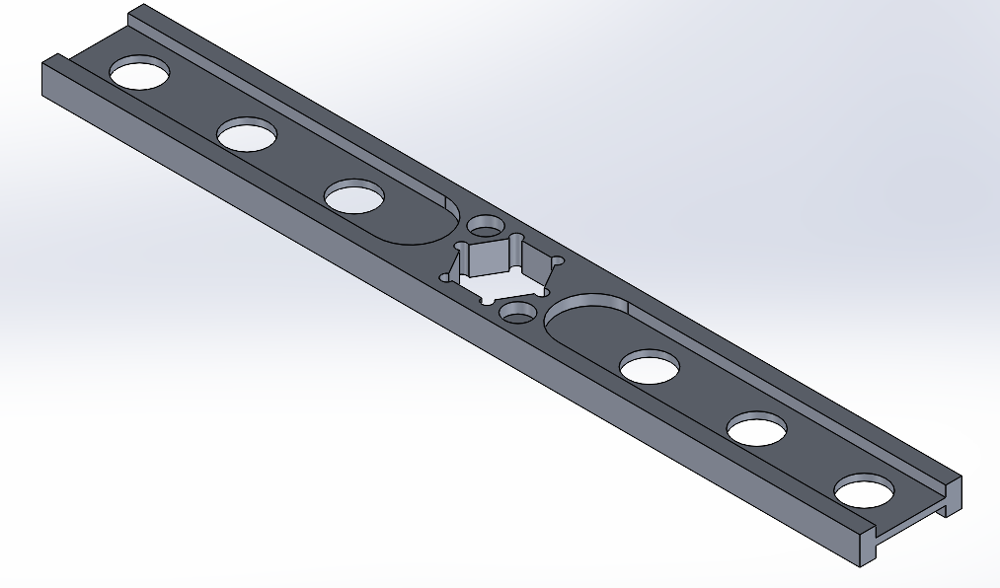
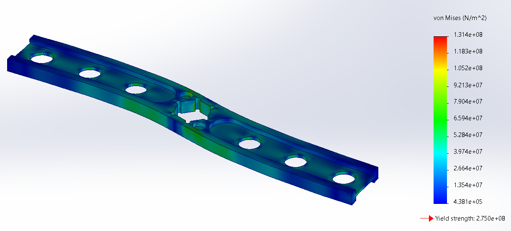
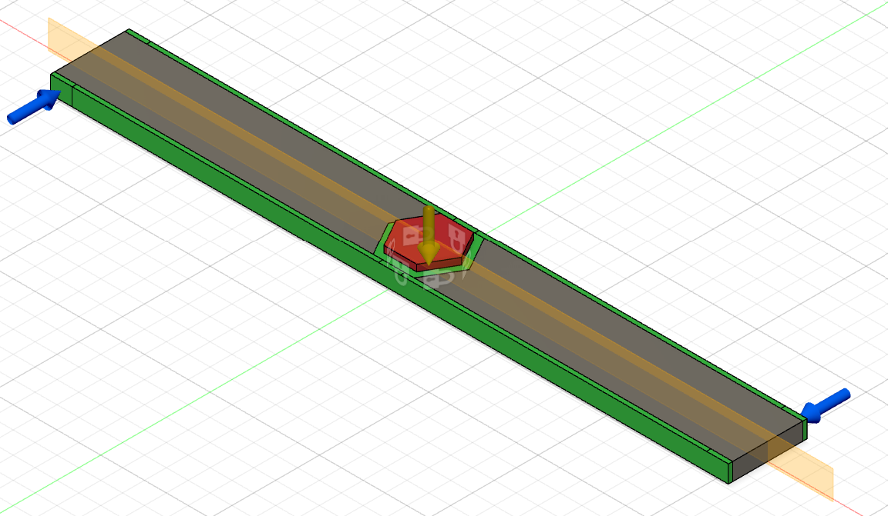
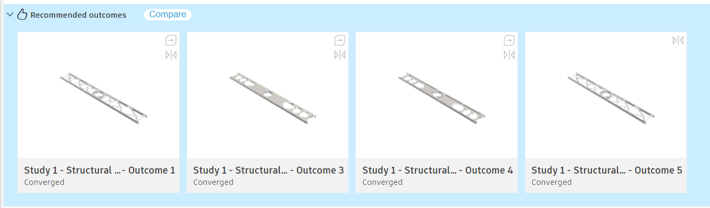
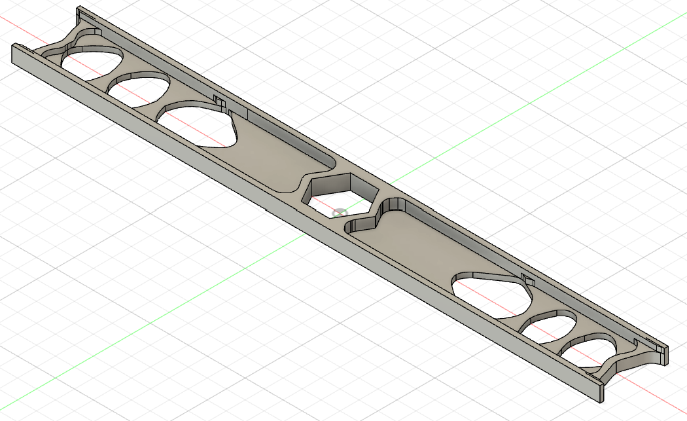
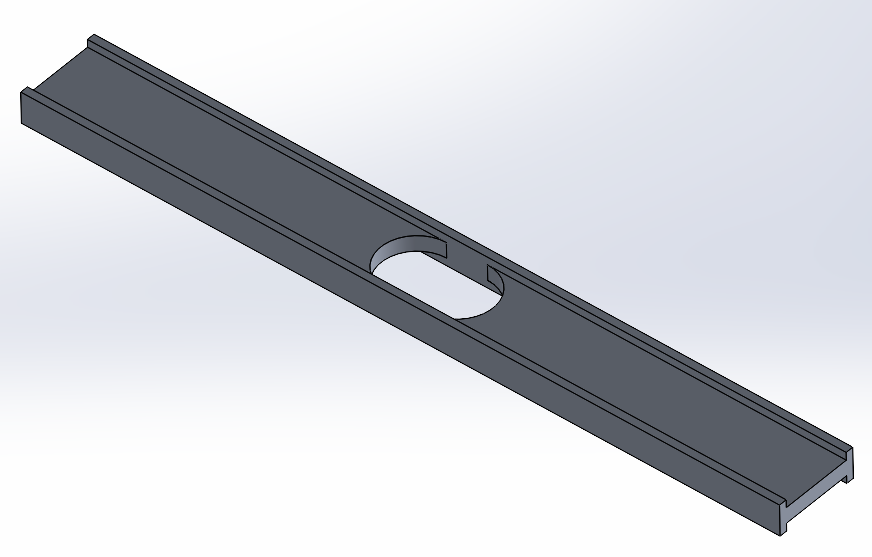
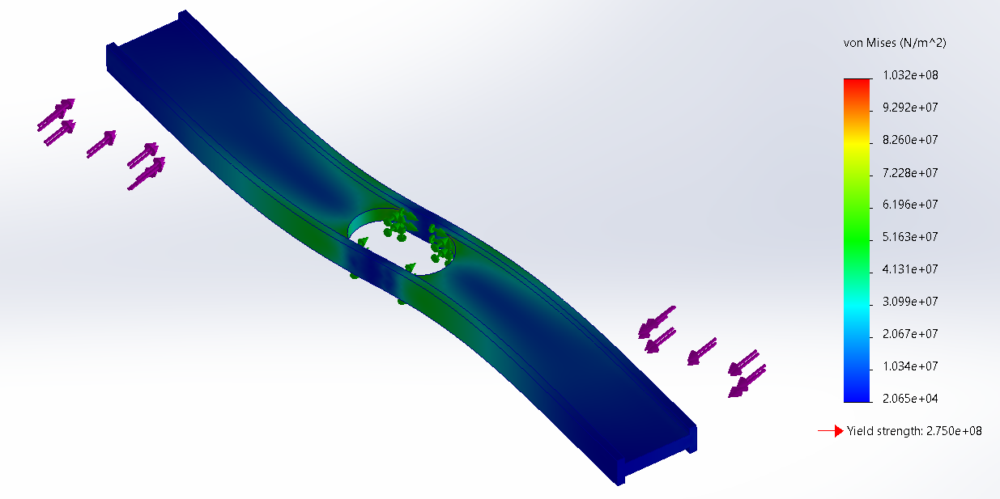
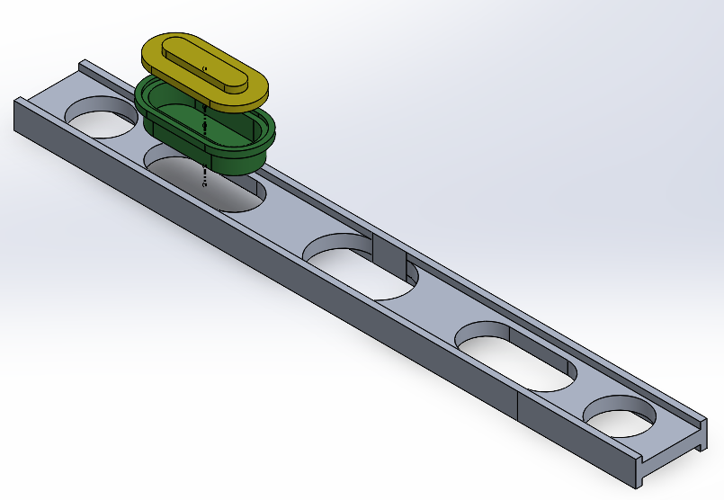
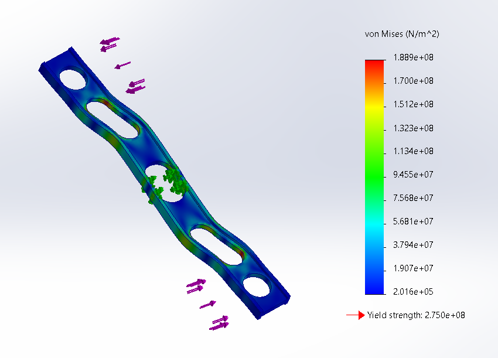
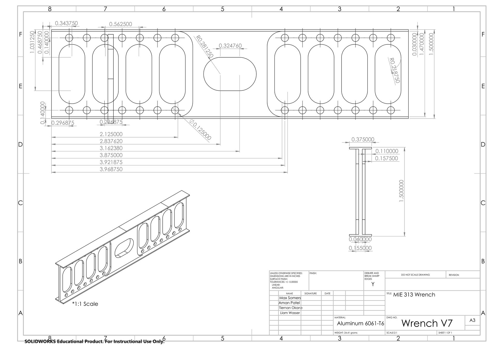
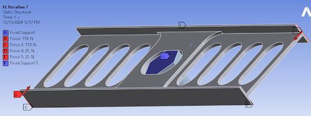
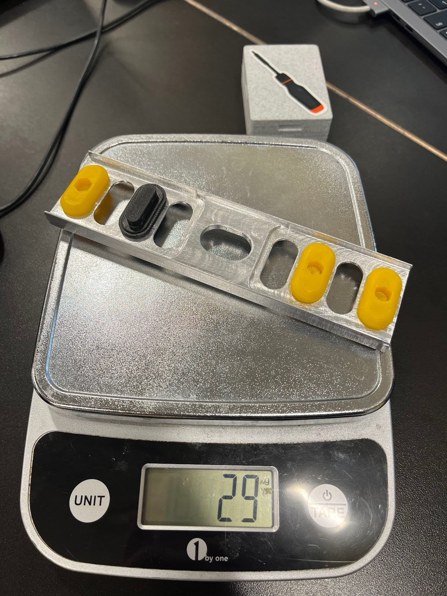